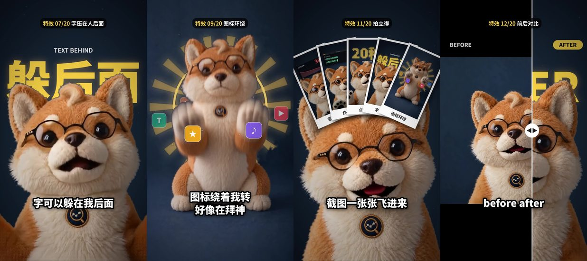

阿旺的 Prompt 库← 全部视频
阿旺的 Prompt 库← 全部视频我只给了一段口播和几段动作片段。剪接、20 种特效、字幕、音效、结尾卡，全部是 Claude 用代码做的，我没开剪辑软件。

成片里的 4 种特效：字压在人后面、图标环绕、截图飞入、前后对比
阿旺的口播是 HeyGen 做的，动作片段是在 Higgsfield 生成的。你用自己拍的片段也一样可以。
素材全部上传，然后打这一句：
直接用你的能力，然后做出最炫的特效，吸引观众。开始。
想一次就剪到这个程度，用这个加强版，把下一步的特效清单一起贴上：
帮我把这段口播剪成一条竖屏短视频（1080×1920，9:16）。 素材： - 口播：角色对嘴的画面和配音，顺序不要改，句子不要删 - 动作片段：穿插用，自己挑最适合哪一句 做法： 1. 先把人物抠出来（背景是纯色），之后的大字、光圈、图标才能放在人后面 2. 开头 2 秒不说话，先快闪几个最炫的特效，再接人物开口 3. 每一句配一个特效，特效要对得上那句在讲什么，用下面的特效清单 4. 画面上方放一个计数「特效 01/20」，每出一个新特效就加一 5. 字幕放在画面下方安全区，字要大，句尾不要句号，只有少数关键词用黄色 6. 每个特效配音效（嗖、砰、打字声、快门声），不要背景音乐 7. 出片后自己抽帧检查：字幕有没有被切、音画是不是一样长、有没有黑帧 先给我看几张截图确认风格，我说可以再出完整视频。
就是成片里出现的顺序。整段贴给 Claude，它就知道每一种要做成什么样：
01 冲击变焦：讲到重点字时画面瞬间推近，再慢慢退回，加一点晃动 02 留存曲线：深色卡片，数字从 0 跳到目标值，曲线一路画下来 03 终端打字：黑色终端窗口，绿字一个一个打出来，光标闪 04 故障转场：画面红蓝分离、横条错位 0.2 秒 05 点阵大字：大字由一颗颗发光圆点组成，圆点随机亮起 06 金句高亮：一句结论用黄色底黑色粗字弹出来，微微倾斜 07 字压在人后面：抠出人物，大字放在人和背景中间，头挡住字的下半 08 对话框弹出：人物缩到一边，AI 对话框弹在旁边，回复逐字打出 09 图标环绕：几个图标绕着人物转，转到后面时被人物挡住，背后加金色光圈 10 截图飞入：前面几段的截图从下面飞进来，排成扇形 11 拍立得：截图加白边，下方写小标题 12 前后对比：中间一条分割线左右拉，左边原片、右边成片 13 三格分屏：同一个画面切成三格，三种色调 14 画中画：画面缩成圆角浮窗，背景模糊，浮窗带光晕 15 逐词高亮：几个大字排成一列，黄色底块一个一个跳过去 16 增长图表：柱状图往上长，加一条往上的箭头（不放假数字） 17 提示词并排：上半是画面，下半是提示词，关键句用黄色高亮 18 定格贴纸：人物抠出来加粗白边，像贴纸一样贴在黄色波点背景上 19 闪白转场：画面闪白再淡回来，配快门声 20 方法卡片：01 / 02 / 03 编号卡片一张张弹出，总结步骤
一条片不用 20 种全部塞进去。阿旺这支是故意全部放，平常挑 3–5 种对得上台词的就够炫了。
阿旺的动作片段是在 Higgsfield 生成的。用下面的链接注册，登录后会有最高 5 折的个人折扣。
这是推广链接，你通过它订阅的话，阿旺会拿到一点佣金，你的价格不会变贵。折扣在登录后 3 小时内有效，建议先想好要哪个方案再点。